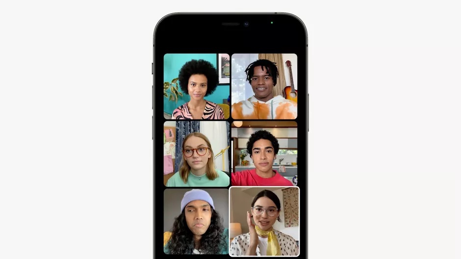
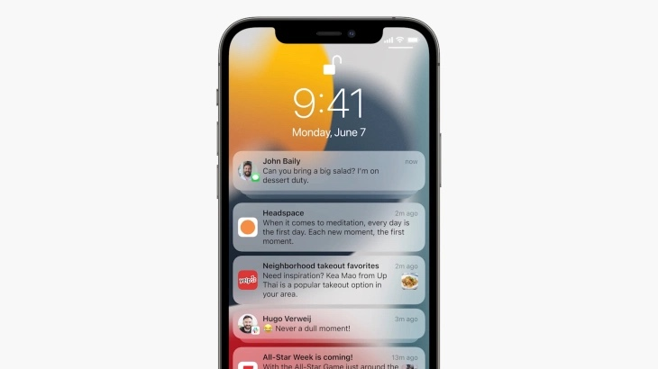
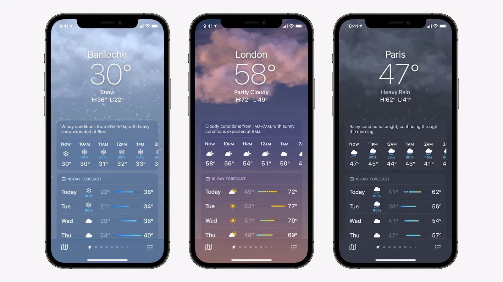
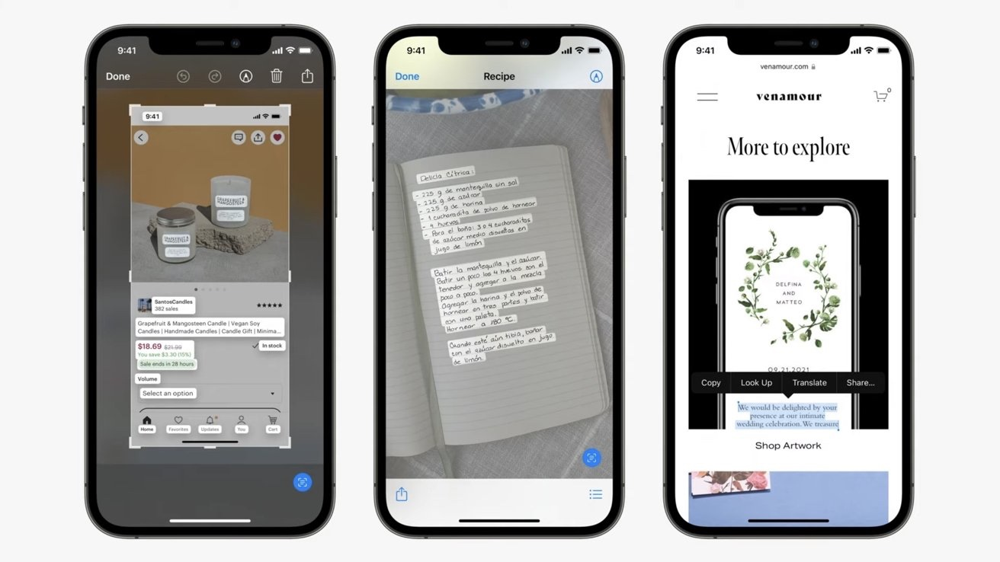
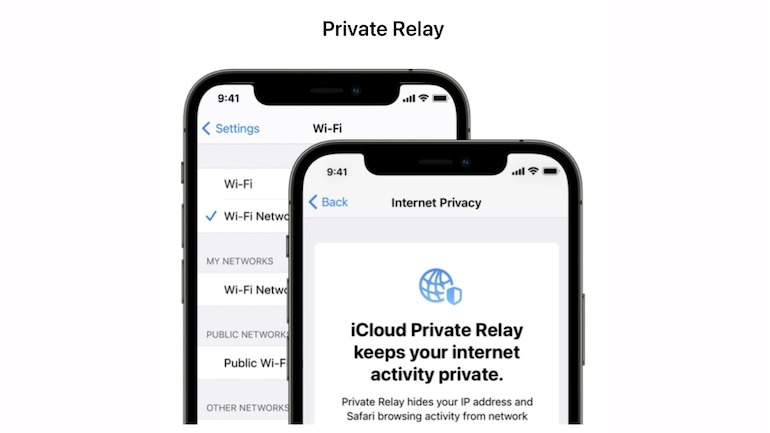
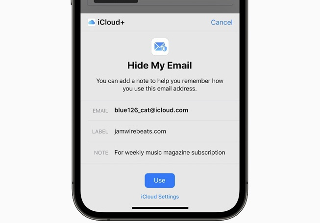
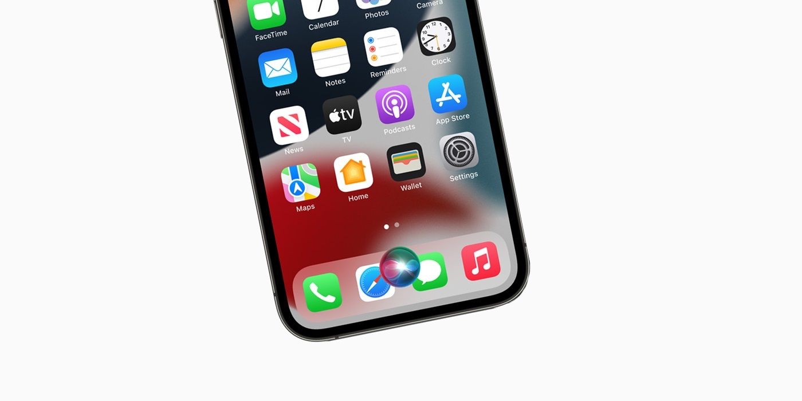

So finally iOS 15 has been announced at WWDC 2021. After last year iOS 14 update which introduced Widgets and an App Library to the iPhone. This year it was just refinements to some apps and it was more towards to make our life easy and
secure with iOS 15.
The latest update, iOS 15, will launch this fall, coinciding with the arrival of a new iPhone typically unveiled in September.
Here are some of the key features that are coming to iPhone with iOS 15:
Facetime:
FaceTime on iPhone will get Spatial Audio support for a better audio experience. Spatial Audio is said to make people sound like they’re sitting in the same room and speaking face to face.
In group FaceTime calls, users will be able
to see every face in a grid view.
Android Facetime:
Notifications:
iPhone notifications get less annoying with Focus. Apple attempts to eliminate the clutter by tweaking how you can control notifications on your iPhone. The iPhone will soon get a Focus app to tailor which notifications you get at specific times of the day. For example, users can set modes such as personal, work, or fitness that will provide notifications on the apps you want and silence the others.
Weather App :
Apple has redesigned the UI of the Weather App. The redesigned app includes more graphical displays of weather data and dynamic layouts that change based on conditions. There’s also new animated backgrounds that more accurately reflects the sun’s position and precipitation, and notifications highlight when rain or snow starts and stops.
Photos :
iOS 15 has some great update for the memories in the photo app. The automated custom video tool with Apple Music integration, image adjustments, a new interface and more. Apple is adding 12 new Memory “looks” that analyze photos and video, and apply contrast and color adjustments to achieve a uniform aesthetic.
Live Text :
Apple’s Live Text is going to read all the text in all your photos with AI. Opening the camera app on iPhone and pointing it at any text will allow users to copy that text.
Not only does this work when capturing a photo, but Live Text
can be used with any photo found in your Photos app to select and share text.
Live Text works across iPhones, iPads, and Mac computers and supports seven languages: English, Chinese,French, Italian, German, Spanish, and Portuguese.
Privacy :
iOS 15 introduces even more privacy controls to help protect user information.
Private Relay :
Apple announced Private Relay which is there version of VPN. When you use Safari, your traffic is encrypted and routed through two relays, which means no one can intercept it and no one can see where you’re going or where you’re coming from, including Apple, your internet service provider, or the website you’re visiting
Hide Email :
Hide My Email, which will let you generate a fake email address for the many websites that force you to enter your mail address just to use or read them, or make you sign up for there website forcefully.
Secure Siri :
Currently Siri requires internet to work, and it can put you at risk of unwanted audio recording. With iOS 15, Apple’s voice assistant Siri will be able to work offline, processing speech on your iPhone so the audio data doesn’t need to leave the device.